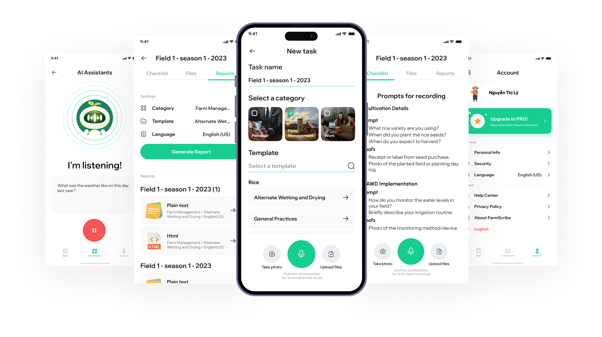
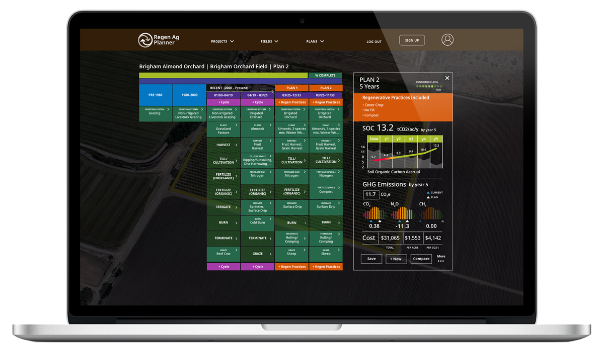

Empowering Farmers, Restoring Our Planet.
We're democratizing the carbon market for smallholder farmers with our revolutionary, low-cost, AI-powered platform.
Discover Our SolutionA System That Excludes the Majority
The global carbon market holds immense promise, but high costs, complex science, and burdensome paperwork create insurmountable barriers for smallholder farmers. This inefficiency not only hinders farmers but also represents a massive, untapped opportunity for scalable climate action.
Our Solution: The RegenAI MMRV Suite
We've developed a cutting-edge Measurement, Monitoring, Reporting, and Verification (MMRV) platform that removes these barriers. Our system is built on three core pillars that create a powerful, scalable, and accessible solution.
Scientifically-Credible Modeling
Built on the DayCent model, developed over 45 years by Colorado State University, ensuring the highest quality carbon credits that meet rigorous registry standards.
AI-Powered Automation
Our AI-driven pipelines and forthcoming Model Context Protocol (MCP) automate the entire MMRV process, enabling unprecedented scale.
Drastic Cost Reduction
By leveraging trained AI agents, we reduce MMRV costs by 80%, making carbon markets economically viable for smallholders for the first time.
Visualizing the Economic Impact
Our technology fundamentally changes the financial equation for carbon farming. This chart illustrates the dramatic cost reduction our platform provides compared to traditional systems.
A Simple Path to Carbon Credits
Our process is designed for simplicity and accessibility. Click each step to learn more about how we turn sustainable practices into tangible revenue.
1. Flexible Data Collection
2. Automated Analysis
3. Unlock New Revenue

Validated by Leading Institutions
Our technology is not just a promise; it's proven in the field and validated through key partnerships.
We've partnered with The Center for Regenerative Agriculture and Resilient Systems (CRARS) at California State University, Chico, to power their carbon quantification efforts. This collaboration demonstrates the robustness and reliability of our platform in a real-world, academic setting, validating our approach and showcasing its potential for widespread adoption.

The RegenAI Advantage
While other MMRV systems exist, they often rely on expensive, proprietary models or manual data entry. Our unique combination of a trusted, well-calibrated scientific model (DayCent) with cutting-edge AI for data ingestion and automation sets us apart. We are the only platform designed from the ground up for true scalability and accessibility, creating a defensible market position and a powerful engine for global impact.
| Feature | RegenAI Solutions | Competitors |
|---|---|---|
| Measurement | High-precision SOC with DayCent + ground truthing | Generic datasets, lower accuracy |
| Monitoring | Automated real-time cloud monitoring | Periodic manual checks |
| Reporting | Verra-compatible automated reports at scale | Static reports, often PDF only |
| Verification | Built-in protocols, reduced costs & faster validation | Manual, costly, error-prone processes |
| Farmer Support | Adoption incentives + technical training | Limited or no direct farmer incentives |
Regenerative Potential Demo
See the potential of regenerative agriculture in Vietnam. Click on the map to drop a pin and calculate estimated credit revenue.
Join the Regenerative Revolution
Are you a smallholder farmer, an agricultural cooperative, or a sustainable development organization? Or are you an investor looking to fuel a scalable solution to one of the world's most pressing problems? Partner with us to unlock the power of the carbon market.
Contact Us to Learn More